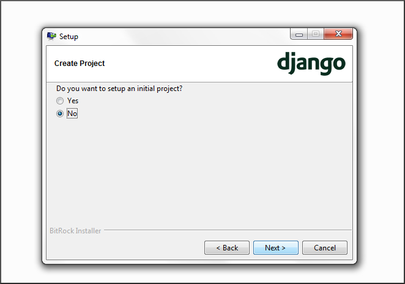

Installing Bitnami for Windows¶
This guide will walk you through the steps necessary to install Bitnami’s Django Stack and prepare your Windows computer to develop a simple news application.
The first step is to download the installer from http://bitnami.org/stack/djangostack. Visit that link and click the free download button on the left.

Then find the downloaded file on your computer and double click it.

That will fire up an installer wizard. Start clicking. When you come to the page offering to install database components, uncheck MySQL and PostgreSQL. It won’t hurt you to install everything, but in our examples we will only be using the SQLite database so you can skip the rest.

It’s okay to install in the default location.

Make sure this one is set to yes.

You do not want to create a default project. So check no on this one.

Windows may give you a warning like this one. Just let it go and click allow.
And when you reach the end, don’t feel like you need to start Bitnami right away. Just wrap it up.

That’s it. You’ve installed everything you need to start with Django. You’re ready to pick a tutorial and start building.
Related Topics
- Documentation overview
- Previous: Your First News App
- Next: Interactive Poll